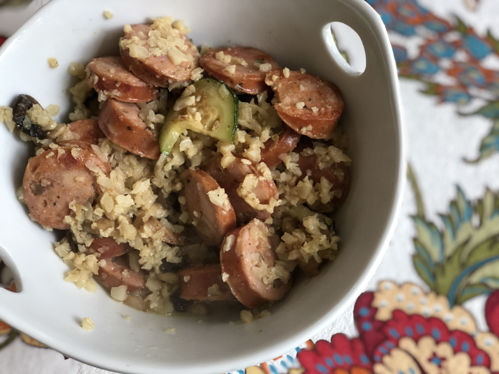

Risotto

Chicken sausage, cauliflower, zucchini, and Parmesan cheese combine in this creamy and delicious low-carb risotto, perfect for any meal.
Ingredients
- ¼ cup ghee
- ½ onion, finely chopped
- 1 clove garlic, minced
- 2 links chicken sausage, cut into 1/2-inch rounds
- 1 head cauliflower, grated
- ½ zucchini, sliced
- ½ cup heavy whipping cream
- 1 cup grated Parmesan cheese
- ½ teaspoon salt
- ¼ teaspoon ground black pepper
- ¼ teaspoon ground nutmeg
Cooking Steps
- Melt ghee in a skillet over medium heat. Add onion and garlic; cook until tender, about 3 minutes. Stir in sausage and grated cauliflower; cook for 3 minutes more. Add zucchini and cook until tender, about 3 minutes.
- Stir heavy cream, Parmesan cheese, salt, pepper, and nutmeg into the skillet; cook over medium heat until creamy, 5 to 7 minutes.